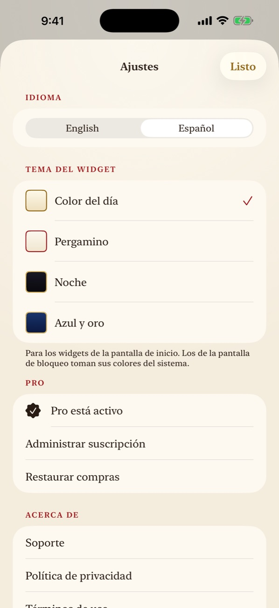

Hoy
Esto diría tu pantalla de inicio ahora mismo.
El widget cambia solo cada mañana: la celebración del día, la cita del Evangelio y el color que hoy viste la Iglesia.
Los colores del año litúrgico
Verde, morado, blanco, rojo.
El widget toma el color litúrgico del día, así que tu pantalla de inicio sigue contigo los tiempos de la Iglesia.
-
Verde · Tiempo Ordinario
Tiempo Ordinario
XXXIII Domingo del Tiempo Ordinario
Mateo 25,14-30
-
Morado · Adviento y Cuaresma
Adviento
I Domingo de Adviento
Marcos 13,33-37
-
Blanco · Navidad y Pascua
Tiempo de Navidad
Natividad del Señor
Juan 1,1-18
-
Rojo · Pentecostés, la Pasión, mártires
Tiempo Pascual
Domingo de Pentecostés
Juan 20,19-23
En la app
El día de la Iglesia, de un vistazo.
- La cita del Evangelio de cada día
- La celebración y el tiempo litúrgico
- Días de ayuno y abstinencia, y días de precepto
- Los misterios del Rosario sugeridos para el día
- Los próximos días
Esta versión no incluye el texto bíblico en español. Verás la cita del Evangelio del día (por ejemplo, Juan 3,16-18), no el texto. El texto está disponible en inglés (Biblia Douay-Rheims) si cambias el idioma de la app.

Temas
O el mismo estilo todo el año.
Con Pro puedes elegir uno de tres temas de color más para los widgets de la pantalla de inicio, en lugar del color del día.
- Pergamino
- Noche
- Azul y oro
Se configura una vez
Un minuto hoy. El día litúrgico, cada día.
Consigue la app
Gratis en el App Store, para iPhone y iPad. Sin crear una cuenta.
Mantén pulsada la pantalla de inicio
Toca Editar y luego Añadir widget, y busca Widgets Católicos.
Elige un tamaño y añádelo
Eso es todo. El widget cambia cada día.
Gratis y Pro
Gratis. Más con Pro.
Gratis
La app y el widget pequeño
- Todo lo que hay en la app
- El widget pequeño de la pantalla de inicio
- El color litúrgico del día
- Sin anuncios, sin cuenta
Pro
Más widgets y temas
- Widget mediano para la pantalla de inicio
- Widgets para la pantalla de bloqueo
- Tres temas de color más
Suscripción anual o mensual, o una compra única de por vida.
Para saber
- El calendario, las citas del Evangelio y las normas de ayuno y de precepto son los de las diócesis de los Estados Unidos. Otros países y algunas diócesis celebran ciertos días de otro modo.
- Fechas incluidas: de 2026 a 2028.
- Widgets Católicos es una app independiente. No ha sido publicada ni aprobada por la Santa Sede, la Conferencia de Obispos Católicos de los Estados Unidos ni ninguna diócesis.
Empieza el día con la Iglesia.
Agrega el widget una vez. Cambia cada día.
Consíguela en el App Store